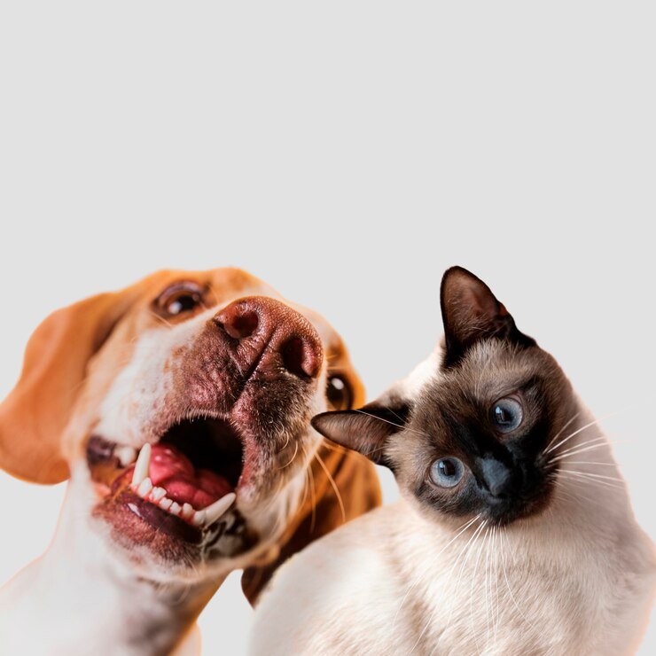
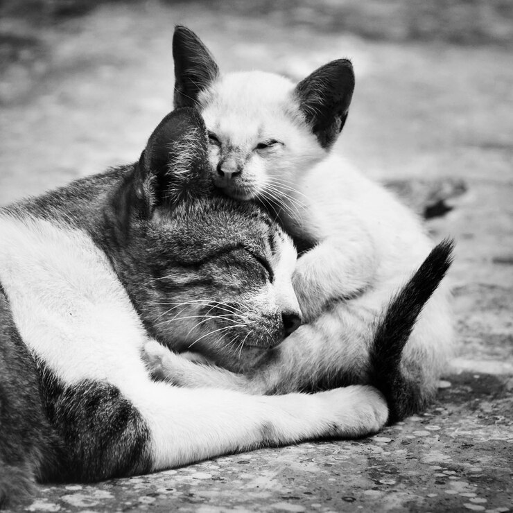
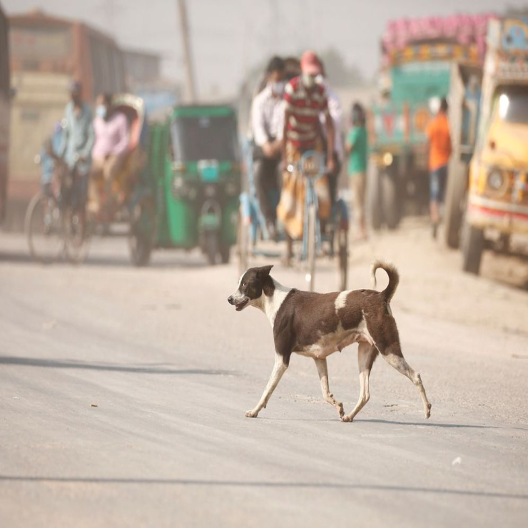
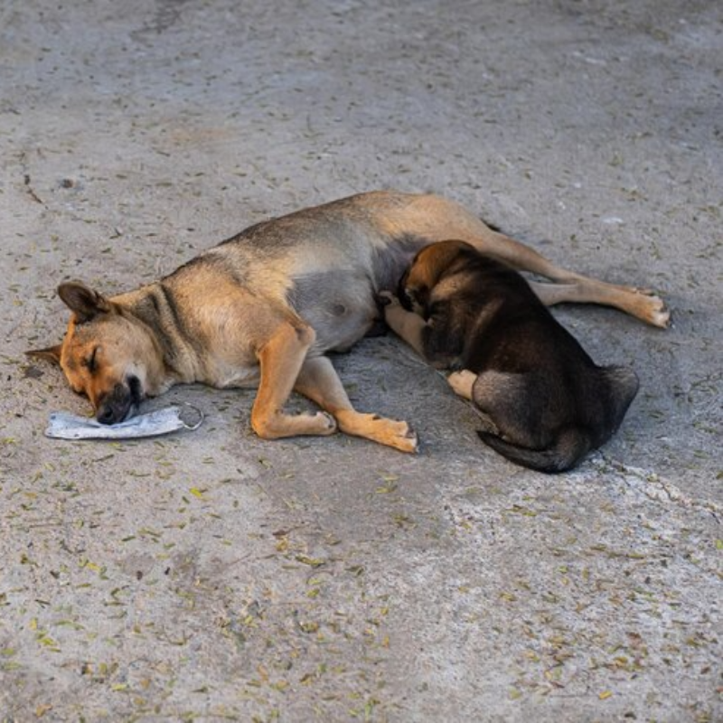
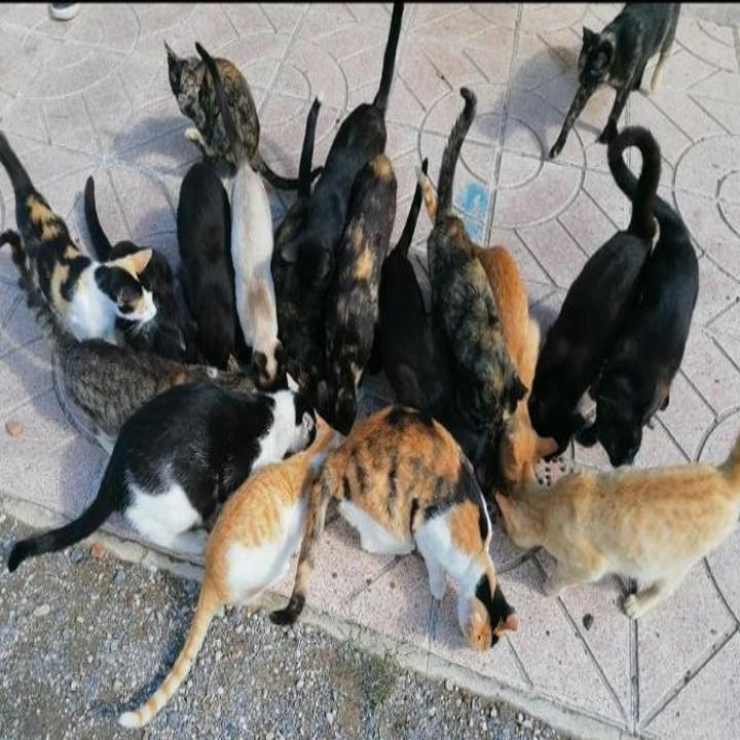
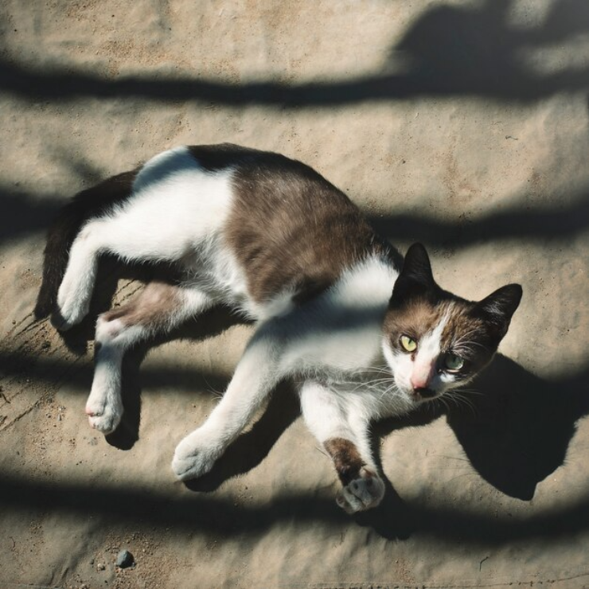
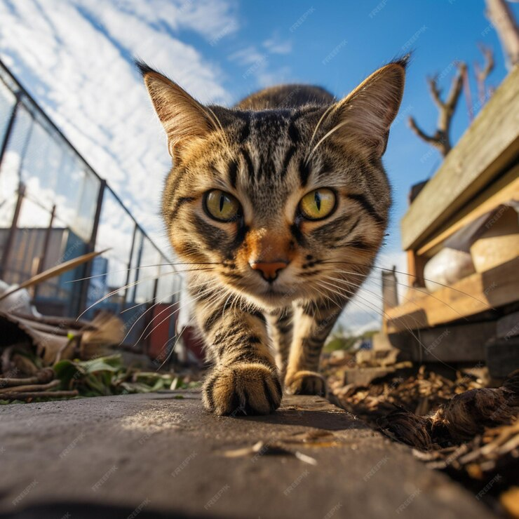
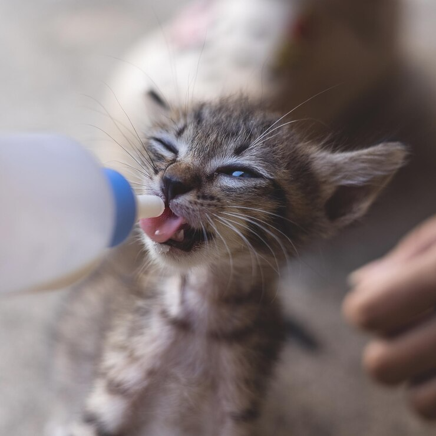
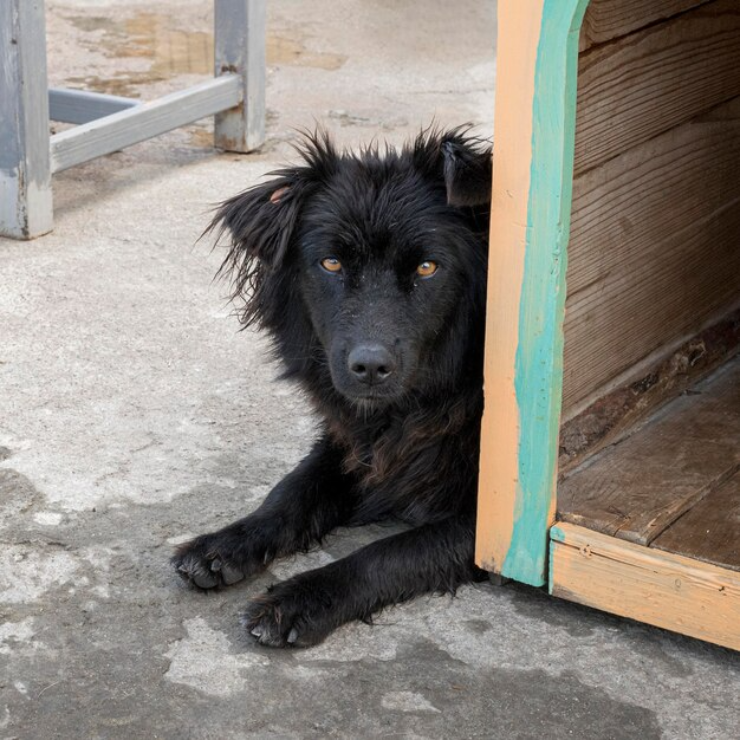
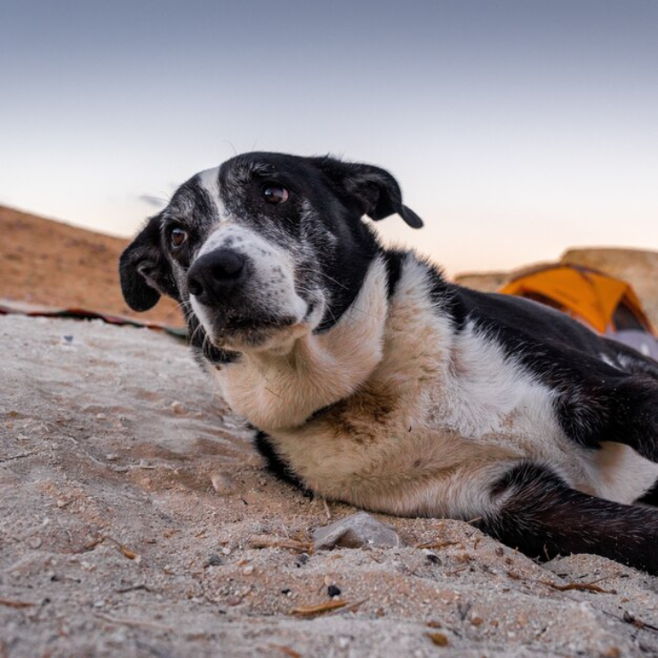

Inicio
Registrá un callejero
Galeria de imagenes
Cómo cuidarlos
Contactános
Cómo
cuidarlos

Derechos de los animales

Responsabilidades hacia los gatos

Bienestar de los Callejeros
Cuidados

¿Cómo ayudarlos?

Gatos callejeros
¿Cómo ayudar a los abandonados?

Alimentación del gato callejero

Guía de ayuda para gatos

Garantizá su bienestar y felicidad

¿Qué hacer si encontrás un callejero

Programa de equilibrio poblacional
Arriba